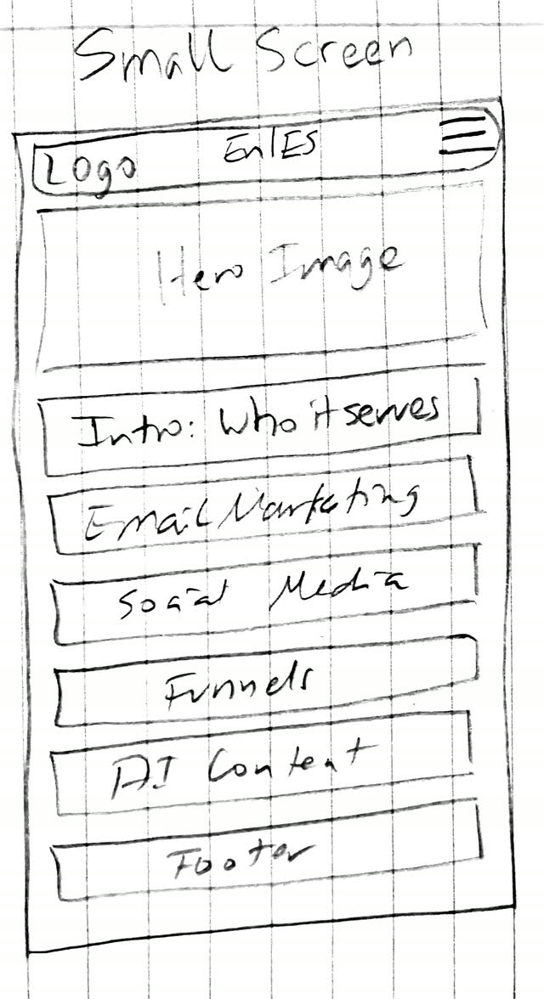
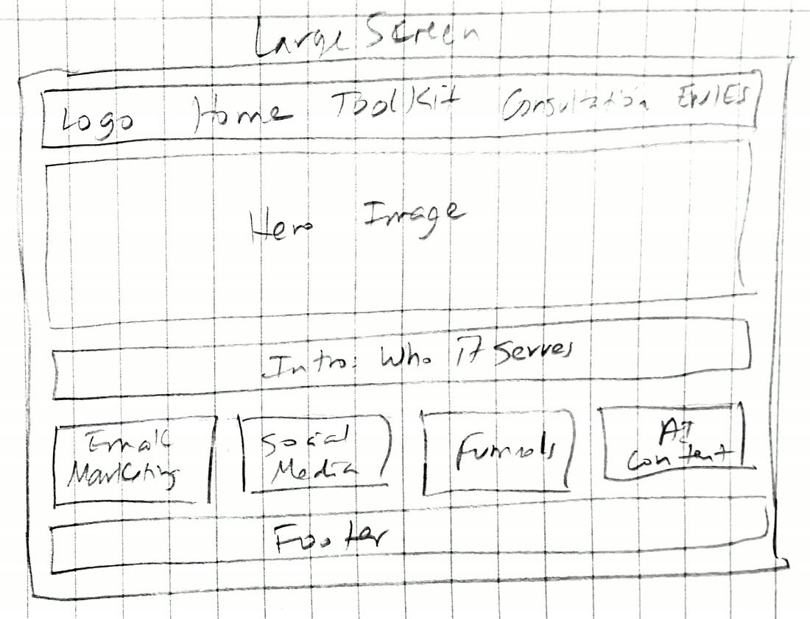

Site Name
Abinadi's Digital Labs — Bilingual Digital Marketing Toolkit
A bilingual (English/Spanish) directory of digital marketing tools and tactics, with a consultation request option for personalized help.
Site Purpose
The site helps small business owners, freelancers and Spanish-speaking entrepreneurs find the right software for their marketing without wading through generic lists. Every tool is described from more than two decades of hands-on experience in digital marketing, funnels and campaign management.
The site has three pages:
- Home: introduces the toolkit, who it serves, and the main categories (email marketing, social media, funnels and AI content).
- Toolkit: lists at least 15 tools with category, pricing model, best use, languages supported and a link. Visitors can filter by category, open a modal with full details and save favorites that persist between visits.
- Consultation: a request form, followed by a confirmation page that shows the submitted data.
A language toggle in the header switches every page between English and Spanish, and the choice is remembered.
Scenarios
- A small business owner asks: "Which email marketing tool fits my budget and my skill level?"
- A freelancer asks: "Which funnel builders are worth learning for client work?"
- A Spanish-speaking entrepreneur asks: "¿Qué herramientas de marketing funcionan en español?"
- A returning visitor asks: "How can I find the tools I saved last time?"
- A visitor who is unsure what to choose asks: "How do I request a consultation for personalized help?"
Color Scheme
The palette is set manually from the Abinadi's Digital Labs brand: four main colors plus neutrals for light and dark modes. This plan page uses the light theme only; the dark neutrals are listed for completeness.
Brand Colors
- Primary
#000000: header, footer, headings and main buttons - Secondary
#851089: section accents, links and hover states - Accent
#770A7B: calls to action and active elements - Highlight
#FF70FF: badges, favorite icons and focus rings on dark backgrounds
Neutrals
- Paper (Light)
#FAF9FC: page and card background in light mode - Ink (Light)
#000000: body text in light mode - Paper (Dark)
#15121D: page background in dark mode - Ink (Dark)
#F1EEF8: body text in dark mode
Typography
- Display
- Montserrat: the agency's actual logo wordmark typeface; geometric and confident, and the single source of truth tying all brand touchpoints together.
- Body
- Source Sans 3 (formerly Source Sans Pro): a humanist sans that keeps long-form copy calm and readable without competing with Montserrat's geometry in headlines.
- Mono
- Consolas: marks data, labels and specs (hex values, metrics, version numbers).
Wireframe

